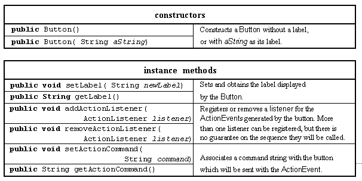
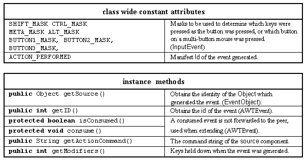

The use of Buttons has already been introduced in Chapter 1. The major resources of the Button class are given in Table 2.9.

Table 2.9 Major resources of the Button class.
The second constructor was used in Chapter 1. The first, default, constructor will create a Button without a label. The first two methods allow the Button's label to be changed or obtained. The remaining methods are concerned with the Button's listener and the command string sent to it, as described in Chapter 1. The major resources of the ActionEvent class, an extension of the AWTEvent class itself an extension of the EventObject class, are listed in Table 2.10.

Table 2.10 Major resources of the ActionEvent class (inherited resources as indicated).
An example of detecting multiple mouse clicks is given later in this chapter, in section 12. Details of how to determine which, if any, key was held down whilst the Button was clicked can be found in Chapter 8 part 7. A Java program, which is intended to be used on any platform, should assume that the mouse has only one button, so as to work on Macintosh platforms. However there is a technique for determining which of the mouse buttons was used, using the same technique for determining which key was held down.